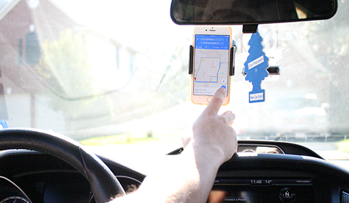

Using Navigation

Though navigation is a great way to help you get around a place that you have no idea about, it often takes your mind off the road. It really doesn’t sound like much of a problem, but when you listen to the directions of a navigation system, you are taking your mind away from what is going on around you. Not only that, but when you hear a direction that is supposed to happen quickly, you make rash decisions, such as cutting across traffic, making turns too fast, speeding or slowing down too much to change lanes. Though navigation systems help in the long run, they can distract you from the road and potentially get you in an accident.